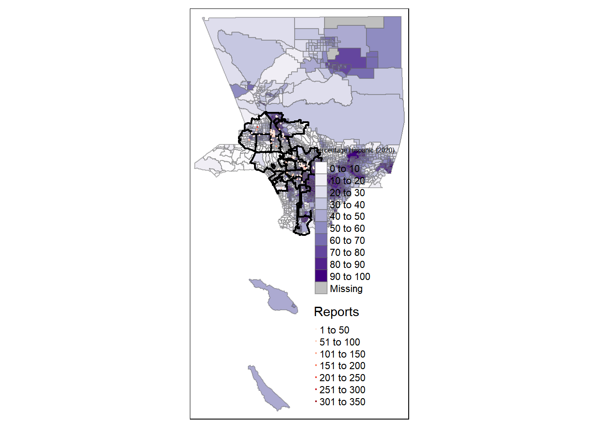

CrimeData.R
ellya
2024-12-06
library(data.table)
library(dtplyr)
library(dplyr)##
## Attaching package: 'dplyr'## The following objects are masked from 'package:data.table':
##
## between, first, last## The following objects are masked from 'package:stats':
##
## filter, lag## The following objects are masked from 'package:base':
##
## intersect, setdiff, setequal, unionlibrary(httr)## Warning: package 'httr' was built under R version 4.4.2options(timeout = 300)
LAdata <- data.table::fread("C:/Users/ellya/OneDrive/Desktop/Final Project/Final Project/Crime_Data_from_2010_to_2019_20241025.csv")
str(LAdata)## Classes 'data.table' and 'data.frame': 2123044 obs. of 28 variables:
## $ DR_NO : int 1307355 11401303 70309629 90631215 100100501 100100506 100100508 100100509 100100510 100100511 ...
## $ Date Rptd : chr "02/20/2010 12:00:00 AM" "09/13/2010 12:00:00 AM" "08/09/2010 12:00:00 AM" "01/05/2010 12:00:00 AM" ...
## $ DATE OCC : chr "02/20/2010 12:00:00 AM" "09/12/2010 12:00:00 AM" "08/09/2010 12:00:00 AM" "01/05/2010 12:00:00 AM" ...
## $ TIME OCC : int 1350 45 1515 150 2100 1650 2005 2100 230 2100 ...
## $ AREA : int 13 14 13 6 1 1 1 1 1 1 ...
## $ AREA NAME : chr "Newton" "Pacific" "Newton" "Hollywood" ...
## $ Rpt Dist No : int 1385 1485 1324 646 176 162 182 157 171 132 ...
## $ Part 1-2 : int 2 2 2 2 1 1 1 1 1 1 ...
## $ Crm Cd : int 900 740 946 900 122 442 330 230 230 341 ...
## $ Crm Cd Desc : chr "VIOLATION OF COURT ORDER" "VANDALISM - FELONY ($400 & OVER, ALL CHURCH VANDALISMS)" "OTHER MISCELLANEOUS CRIME" "VIOLATION OF COURT ORDER" ...
## $ Mocodes : chr "0913 1814 2000" "0329" "0344" "1100 0400 1402" ...
## $ Vict Age : int 48 0 0 47 47 23 46 51 30 55 ...
## $ Vict Sex : chr "M" "M" "M" "F" ...
## $ Vict Descent : chr "H" "W" "H" "W" ...
## $ Premis Cd : int 501 101 103 101 103 404 101 710 108 710 ...
## $ Premis Desc : chr "SINGLE FAMILY DWELLING" "STREET" "ALLEY" "STREET" ...
## $ Weapon Used Cd: int NA NA NA 102 400 NA NA 500 400 NA ...
## $ Weapon Desc : chr "" "" "" "HAND GUN" ...
## $ Status : chr "AA" "IC" "IC" "IC" ...
## $ Status Desc : chr "Adult Arrest" "Invest Cont" "Invest Cont" "Invest Cont" ...
## $ Crm Cd 1 : int 900 740 946 900 122 442 330 230 230 341 ...
## $ Crm Cd 2 : int NA NA NA 998 NA NA NA NA NA 998 ...
## $ Crm Cd 3 : int NA NA NA NA NA NA NA NA NA NA ...
## $ Crm Cd 4 : int NA NA NA NA NA NA NA NA NA NA ...
## $ LOCATION : chr "300 E GAGE AV" "SEPULVEDA BL" "1300 E 21ST ST" "CAHUENGA BL" ...
## $ Cross Street : chr "" "MANCHESTER AV" "" "HOLLYWOOD BL" ...
## $ LAT : num 34 34 34 34.1 34 ...
## $ LON : num -118 -118 -118 -118 -118 ...
## - attr(*, ".internal.selfref")=<externalptr>#Important variables to look at: Vict Age, Vict Sex, Vic Descent, Crm Cd, LAT, LON, AREA NAME
dim(LAdata)## [1] 2123044 28sum(duplicated(LAdata)) #checked for dulplicated data --> no duplicates## [1] 0#Victim Age
#An age of zero appeared to have been used when age was unknown, making it challenging to differentiate between crimes involving children of 0 years old and those where the age was not recorded. Consequently, all observations with an age of 0 were converted into missing values, except for those associated with crime codes related to children.
table(LAdata$`Vict Age`)##
## -13 -12 -11 -10 -9 -8 -7 -6 -5 -4 -3
## 1 3 2 11 18 14 20 26 40 50 104
## -2 -1 0 2 3 4 5 6 7 8 9
## 154 292 370180 1511 1884 2248 2625 2759 2812 2928 3525
## 10 11 12 13 14 15 16 17 18 19 20
## 4066 5532 7322 9794 12043 13981 15275 17506 23801 28778 34200
## 21 22 23 24 25 26 27 28 29 30 31
## 38289 41962 45339 46895 48253 47617 47141 46617 46044 45273 43183
## 32 33 34 35 36 37 38 39 40 41 42
## 41970 41040 40422 41443 37738 36067 35317 34654 35069 33146 32239
## 43 44 45 46 47 48 49 50 51 52 53
## 31789 31551 31353 31161 30864 30266 29214 30876 27954 27156 26117
## 54 55 56 57 58 59 60 61 62 63 64
## 25164 24129 23138 21643 20121 19168 17872 16194 15022 13858 12707
## 65 66 67 68 69 70 71 72 73 74 75
## 11609 10556 9511 8449 8042 7179 6355 5775 4893 4556 4395
## 76 77 78 79 80 81 82 83 84 85 86
## 3860 3530 3249 2983 2753 2413 2166 1975 1787 1542 1424
## 87 88 89 90 91 92 93 94 95 96 97
## 1204 1117 920 793 649 499 452 332 246 191 170
## 98 99 114 118
## 118 809 1 1LAdata$`Vict Age`[LAdata$`Vict Age` < 0] <- NA
LAdata$`Vict Age`[LAdata$`Vict Age` == 0 & LAdata$`Crm Cd Desc` %in% c(
"CHILD ABANDONMENT",
"CHILD ABUSE (PHYSICAL) - SIMPLE ASSAULT",
"CHILD ABUSE (PHYSICAL) - AGGRAVATED ASSAULT",
"CHILD ANNOYING (17YRS & UNDER)",
"CHILD NEGLECT (SEE 300 W.I.C.)",
"CHILD PORNOGRAPHY",
"CHILD STEALING",
"LEWD/LASCIVIOUS ACTS WITH CHILD"
)] <- 0
LAdata$`Vict Age`[LAdata$`Vict Age` == 0 & !LAdata$`Crm Cd Desc` %in% c(
"CHILD ABANDONMENT",
"CHILD ABUSE (PHYSICAL) - SIMPLE ASSAULT",
"CHILD ABUSE (PHYSICAL) - AGGRAVATED ASSAULT",
"CHILD ANNOYING (17YRS & UNDER)",
"CHILD NEGLECT (SEE 300 W.I.C.)",
"CHILD PORNOGRAPHY",
"CHILD STEALING",
"LEWD/LASCIVIOUS ACTS WITH CHILD"
)] <- NA
table(LAdata$`Vict Age`)##
## 0 2 3 4 5 6 7 8 9 10 11 12 13
## 2016 1511 1884 2248 2625 2759 2812 2928 3525 4066 5532 7322 9794
## 14 15 16 17 18 19 20 21 22 23 24 25 26
## 12043 13981 15275 17506 23801 28778 34200 38289 41962 45339 46895 48253 47617
## 27 28 29 30 31 32 33 34 35 36 37 38 39
## 47141 46617 46044 45273 43183 41970 41040 40422 41443 37738 36067 35317 34654
## 40 41 42 43 44 45 46 47 48 49 50 51 52
## 35069 33146 32239 31789 31551 31353 31161 30864 30266 29214 30876 27954 27156
## 53 54 55 56 57 58 59 60 61 62 63 64 65
## 26117 25164 24129 23138 21643 20121 19168 17872 16194 15022 13858 12707 11609
## 66 67 68 69 70 71 72 73 74 75 76 77 78
## 10556 9511 8449 8042 7179 6355 5775 4893 4556 4395 3860 3530 3249
## 79 80 81 82 83 84 85 86 87 88 89 90 91
## 2983 2753 2413 2166 1975 1787 1542 1424 1204 1117 920 793 649
## 92 93 94 95 96 97 98 99 114 118
## 499 452 332 246 191 170 118 809 1 1sum(is.na(LAdata$`Vict Age`))## [1] 368899hist((LAdata$`Vict Age`))#Victim Sex
# F - Female M - Male X - Unknown
table(LAdata$`Vict Sex`)##
## - F H M N X
## 196818 1 893785 73 977042 17 55308LAdata <- LAdata |>
mutate(`Vict Sex` = case_when(
`Vict Sex` %in% c("H", "N", "-", "") ~ "X",
TRUE ~ `Vict Sex`))
table(LAdata$`Vict Sex`)##
## F M X
## 893785 977042 252217sum(is.na(LAdata$`Vict Sex`))## [1] 0barplot(table(LAdata$`Vict Sex`))#Victim Descent --> summarized into 6 races
sum(is.na(LAdata$`Vict Descent`))## [1] 0LAdata <- LAdata |>
mutate(`Vict Descent` = case_when(
`Vict Descent` %in% c("-", "") ~ "X",
`Vict Descent` %in% c("C", "D", "F", "J", "K", "L", "V", "Z") ~ "A",
`Vict Descent` %in% c("G", "S", "U", "O") ~ "P",
TRUE ~ `Vict Descent`))
LAdata <- LAdata[LAdata$`Vict Descent` %in% c("A", "B", "H", "W", "P", "X")]
barplot(table(LAdata$`Vict Descent`))#Crime Code
table(LAdata$`Crm Cd Desc`)##
## ABORTION/ILLEGAL
## 7
## ARSON
## 3528
## ASSAULT WITH DEADLY WEAPON ON POLICE OFFICER
## 1604
## ASSAULT WITH DEADLY WEAPON, AGGRAVATED ASSAULT
## 92723
## ATTEMPTED ROBBERY
## 11993
## BATTERY - SIMPLE ASSAULT
## 190539
## BATTERY ON A FIREFIGHTER
## 325
## BATTERY POLICE (SIMPLE)
## 4868
## BATTERY WITH SEXUAL CONTACT
## 11525
## BEASTIALITY, CRIME AGAINST NATURE SEXUAL ASSLT WITH ANIM
## 26
## BIGAMY
## 15
## BIKE - ATTEMPTED STOLEN
## 39
## BIKE - STOLEN
## 14226
## BLOCKING DOOR INDUCTION CENTER
## 3
## BOAT - STOLEN
## 284
## BOMB SCARE
## 1186
## BRANDISH WEAPON
## 15472
## BRIBERY
## 32
## BUNCO, ATTEMPT
## 754
## BUNCO, GRAND THEFT
## 9149
## BUNCO, PETTY THEFT
## 5430
## BURGLARY
## 147691
## BURGLARY FROM VEHICLE
## 162141
## BURGLARY FROM VEHICLE, ATTEMPTED
## 2844
## BURGLARY, ATTEMPTED
## 12532
## CHILD ABANDONMENT
## 104
## CHILD ABUSE (PHYSICAL) - AGGRAVATED ASSAULT
## 1693
## CHILD ABUSE (PHYSICAL) - SIMPLE ASSAULT
## 9386
## CHILD ANNOYING (17YRS & UNDER)
## 5248
## CHILD NEGLECT (SEE 300 W.I.C.)
## 5253
## CHILD PORNOGRAPHY
## 229
## CHILD STEALING
## 1126
## CONSPIRACY
## 55
## CONTEMPT OF COURT
## 3837
## CONTRIBUTING
## 184
## COUNTERFEIT
## 842
## CREDIT CARDS, FRAUD USE ($950 & UNDER
## 305
## CREDIT CARDS, FRAUD USE ($950.01 & OVER)
## 798
## CRIMINAL HOMICIDE
## 2776
## CRIMINAL THREATS - NO WEAPON DISPLAYED
## 56655
## CRM AGNST CHLD (13 OR UNDER) (14-15 & SUSP 10 YRS OLDER)
## 9569
## CRUELTY TO ANIMALS
## 1274
## DEFRAUDING INNKEEPER/THEFT OF SERVICES, $950 & UNDER
## 2158
## DEFRAUDING INNKEEPER/THEFT OF SERVICES, OVER $950.01
## 238
## DISCHARGE FIREARMS/SHOTS FIRED
## 3792
## DISHONEST EMPLOYEE - GRAND THEFT
## 175
## DISHONEST EMPLOYEE - PETTY THEFT
## 133
## DISHONEST EMPLOYEE ATTEMPTED THEFT
## 10
## DISRUPT SCHOOL
## 44
## DISTURBING THE PEACE
## 3699
## DOCUMENT FORGERY / STOLEN FELONY
## 22885
## DOCUMENT WORTHLESS ($200 & UNDER)
## 62
## DOCUMENT WORTHLESS ($200.01 & OVER)
## 375
## DRIVING WITHOUT OWNER CONSENT (DWOC)
## 475
## DRUGS, TO A MINOR
## 48
## DRUNK ROLL
## 37
## DRUNK ROLL - ATTEMPT
## 1
## EMBEZZLEMENT, GRAND THEFT ($950.01 & OVER)
## 8078
## EMBEZZLEMENT, PETTY THEFT ($950 & UNDER)
## 598
## EXTORTION
## 2614
## FAILURE TO DISPERSE
## 20
## FAILURE TO YIELD
## 521
## FALSE IMPRISONMENT
## 955
## FALSE POLICE REPORT
## 407
## FIREARMS RESTRAINING ORDER (FIREARMS RO)
## 2
## FIREARMS TEMPORARY RESTRAINING ORDER (TEMP FIREARMS RO)
## 1
## GRAND THEFT / AUTO REPAIR
## 16
## GRAND THEFT / INSURANCE FRAUD
## 73
## HUMAN TRAFFICKING - COMMERCIAL SEX ACTS
## 497
## HUMAN TRAFFICKING - INVOLUNTARY SERVITUDE
## 103
## ILLEGAL DUMPING
## 509
## INCEST (SEXUAL ACTS BETWEEN BLOOD RELATIVES)
## 13
## INCITING A RIOT
## 14
## INDECENT EXPOSURE
## 3524
## INTIMATE PARTNER - AGGRAVATED ASSAULT
## 15469
## INTIMATE PARTNER - SIMPLE ASSAULT
## 114654
## KIDNAPPING
## 2005
## KIDNAPPING - GRAND ATTEMPT
## 718
## LETTERS, LEWD - TELEPHONE CALLS, LEWD
## 21373
## LEWD CONDUCT
## 1394
## LEWD/LASCIVIOUS ACTS WITH CHILD
## 270
## LYNCHING
## 45
## LYNCHING - ATTEMPTED
## 25
## MANSLAUGHTER, NEGLIGENT
## 7
## ORAL COPULATION
## 2100
## OTHER ASSAULT
## 4099
## OTHER MISCELLANEOUS CRIME
## 20721
## PANDERING
## 335
## PEEPING TOM
## 1182
## PETTY THEFT - AUTO REPAIR
## 24
## PICKPOCKET
## 1004
## PICKPOCKET, ATTEMPT
## 23
## PIMPING
## 481
## PROWLER
## 943
## PURSE SNATCHING
## 1183
## PURSE SNATCHING - ATTEMPT
## 47
## RAPE, ATTEMPTED
## 1131
## RAPE, FORCIBLE
## 10866
## RECKLESS DRIVING
## 265
## REPLICA FIREARMS(SALE,DISPLAY,MANUFACTURE OR DISTRIBUTE)
## 30
## RESISTING ARREST
## 3253
## ROBBERY
## 83827
## SEX OFFENDER REGISTRANT OUT OF COMPLIANCE
## 1740
## SEX,UNLAWFUL(INC MUTUAL CONSENT, PENETRATION W/ FRGN OBJ
## 4466
## SEXUAL PENETRATION W/FOREIGN OBJECT
## 3039
## SHOPLIFTING-GRAND THEFT ($950.01 & OVER)
## 4724
## SHOPLIFTING - ATTEMPT
## 243
## SHOPLIFTING - PETTY THEFT ($950 & UNDER)
## 48388
## SHOTS FIRED AT INHABITED DWELLING
## 2535
## SHOTS FIRED AT MOVING VEHICLE, TRAIN OR AIRCRAFT
## 296
## SODOMY/SEXUAL CONTACT B/W PENIS OF ONE PERS TO ANUS OTH
## 1620
## STALKING
## 1853
## TELEPHONE PROPERTY - DAMAGE
## 37
## THEFT-GRAND ($950.01 & OVER)EXCPT,GUNS,FOWL,LIVESTK,PROD
## 74654
## THEFT FROM MOTOR VEHICLE - ATTEMPT
## 1237
## THEFT FROM MOTOR VEHICLE - GRAND ($950.01 AND OVER)
## 31656
## THEFT FROM MOTOR VEHICLE - PETTY ($950 & UNDER)
## 88512
## THEFT FROM PERSON - ATTEMPT
## 293
## THEFT OF IDENTITY
## 130327
## THEFT PLAIN - ATTEMPT
## 1655
## THEFT PLAIN - PETTY ($950 & UNDER)
## 149780
## THEFT, COIN MACHINE - ATTEMPT
## 26
## THEFT, COIN MACHINE - GRAND ($950.01 & OVER)
## 46
## THEFT, COIN MACHINE - PETTY ($950 & UNDER)
## 232
## THEFT, PERSON
## 14770
## THREATENING PHONE CALLS/LETTERS
## 3112
## THROWING OBJECT AT MOVING VEHICLE
## 1650
## TILL TAP - ATTEMPT
## 4
## TILL TAP - GRAND THEFT ($950.01 & OVER)
## 20
## TILL TAP - PETTY ($950 & UNDER)
## 94
## TRAIN WRECKING
## 2
## TRESPASSING
## 21589
## UNAUTHORIZED COMPUTER ACCESS
## 1476
## VANDALISM - FELONY ($400 & OVER, ALL CHURCH VANDALISMS)
## 109448
## VANDALISM - MISDEAMEANOR ($399 OR UNDER)
## 90418
## VEHICLE - ATTEMPT STOLEN
## 3349
## VEHICLE - STOLEN
## 159939
## VEHICLE, STOLEN - OTHER (MOTORIZED SCOOTERS, BIKES, ETC)
## 60
## VIOLATION OF COURT ORDER
## 20034
## VIOLATION OF RESTRAINING ORDER
## 19324
## VIOLATION OF TEMPORARY RESTRAINING ORDER
## 1443
## WEAPONS POSSESSION/BOMBING
## 175sum(is.na(LAdata$`Crm Cd Desc`))## [1] 0#LAT, LON, and AREA
#It was noted that unknown LAT and LON data was listed as 0.
LAdata$'LAT'[LAdata$'LAT' == 0] <- NA
LAdata$'LON'[LAdata$'LON' == 0] <- NA
sum(is.na(LAdata$`LON`))## [1] 908sum(is.na(LAdata$`LAT`))## [1] 908table(LAdata$`AREA NAME`)##
## 77th Street Central Devonshire Foothill Harbor Hollenbeck
## 145808 98464 96842 80238 92255 78171
## Hollywood Mission N Hollywood Newton Northeast Olympic
## 99309 104007 114310 100310 100553 95688
## Pacific Rampart Southeast Southwest Topanga Van Nuys
## 112752 89889 111820 135500 97942 100063
## West LA West Valley Wilshire
## 89311 89980 88875sum(is.na(LAdata$`AREA NAME`))## [1] 0sum(!is.na(LAdata$`AREA NAME`))## [1] 2122087barplot(table(LAdata$`AREA NAME`))
library(ggplot2)library(RColorBrewer)
library(stringr)
library(forcats)
library(data.table)
LAdatanomissing <- LAdata |>
filter(!is.na(`Vict Sex`) &
!is.na(`Vict Descent`) &
!is.na(`Vict Age`) &
!is.na(`LAT`) &
!is.na(`LON`)
)
dim(LAdatanomissing)## [1] 1752469 28#Race and gender for LA
LAdatanomissing |>
ggplot() +
geom_bar(mapping = aes(x = `Vict Descent`, fill = `Vict Sex`), position = "dodge") +
labs(title = "Number of Crimes Categorized by Race and Gender") +
labs(x = "Race", y = "Number of Crimes Experienced", fill = "Gender") +
scale_fill_manual(values = c("F" = "pink", "M" = "lightblue", "X" = "gray"),
labels = c("F" = "Female", "M" = "Male", "X" = "Unknown")) +
scale_x_discrete(labels = c(
"A" = "Asian",
"B" = "Black",
"H" = "Hispanic",
"P" = "Pacific Islander",
"W" = "White",
"X" = "Unknown"
))crimesbyrace <- LAdatanomissing |>
group_by(`Vict Sex`, `Vict Descent`) %>%
summarise(
Entries = n(),
.group = 'drop'
) ## `summarise()` has grouped output by 'Vict Sex'. You can override using the
## `.groups` argument.crimesbyrace <- crimesbyrace[order(crimesbyrace$Entries, decreasing = TRUE),]
crimesbyrace## # A tibble: 18 × 4
## # Groups: Vict Sex [3]
## `Vict Sex` `Vict Descent` Entries .group
## <chr> <chr> <int> <chr>
## 1 F H 365134 drop
## 2 M H 343067 drop
## 3 M W 247949 drop
## 4 F W 220837 drop
## 5 F B 192432 drop
## 6 M B 138643 drop
## 7 M P 97088 drop
## 8 F P 68855 drop
## 9 F A 32415 drop
## 10 M A 30939 drop
## 11 M X 7520 drop
## 12 X X 6022 drop
## 13 F X 1402 drop
## 14 X H 62 drop
## 15 X W 35 drop
## 16 X P 24 drop
## 17 X B 23 drop
## 18 X A 22 drop#LA age distribution
custom_title1 <- c("Number of Crimes Reported by Age in Los Angeles from 2010-2019")
wrapped_title1 <- sapply(custom_title1, function(x) str_wrap(x, width = 50))
LAage <- LAdatanomissing |>
mutate(AgeGroup = cut(`Vict Age`, breaks = seq(0, 120, by = 10), right = FALSE,
labels = paste(seq(0, 110, by = 10), seq(9, 119, by = 10), sep = "-")))
plotLAage <- LAage |>
ggplot(aes(x = `AgeGroup`, fill = `AgeGroup`)) +
geom_bar(position = "dodge") +
labs(title = wrapped_title1) +
labs(x = "Age (Years)", y = "Number of Crimes Reported") +
scale_fill_brewer(palette = "Paired") +
theme(legend.position = "none") +
theme(axis.text.x = element_text(angle = 45, hjust = 1))
plotLAage
#Hispanic Female Age Distribution
custom_title2 <- c("Number of Crimes Reported by Hispanic Females by Age in Los Angeles from 2010-2019")
wrapped_title2 <- sapply(custom_title2, function(x) str_wrap(x, width = 50))
HispanicMales <- LAdatanomissing[ `Vict Sex` == "M" & `Vict Descent` == "H"]
HispanicFemales <- LAdatanomissing[ `Vict Sex` == "F" & `Vict Descent` == "H"]
HispanicFemales[, AgeGroup := cut(`Vict Age`, breaks = seq(0, 120, by = 10),
right = FALSE,
labels = paste(seq(0, 110, by = 10), seq(9, 119, by = 10), sep = "-"))]
plotHFage <- HispanicFemales |>
ggplot(aes(x = `AgeGroup`, fill = `AgeGroup`)) +
geom_bar(position = "dodge") +
labs(title = wrapped_title2) +
labs(x = "Age (Years)", y = "Number of Crimes Reported") +
scale_fill_brewer(palette = "Paired") +
theme(legend.position = "none") +
theme(axis.text.x = element_text(angle = 45, hjust = 1))
plotHFage#Top 5 crimes in Los Angeles
LAcrimes <- LAdatanomissing |>
group_by(`Crm Cd Desc`) |>
summarize(
Entries = n(),
.groups = 'drop') |>
arrange(desc(Entries)) |>
top_n(5, Entries)
LAcrimes## # A tibble: 5 × 2
## `Crm Cd Desc` Entries
## <chr> <int>
## 1 BATTERY - SIMPLE ASSAULT 188606
## 2 BURGLARY FROM VEHICLE 159096
## 3 THEFT PLAIN - PETTY ($950 & UNDER) 130770
## 4 THEFT OF IDENTITY 128201
## 5 BURGLARY 127313Females <- LAdatanomissing[`Vict Sex` == "F"]
Males <- LAdatanomissing[`Vict Sex` == "M"]
#Top 5 crimes done to males
Malecrimes <- Males |>
group_by(`Crm Cd Desc`) |>
summarize(
Entries = n(),
.groups = 'drop') |>
arrange(desc(Entries)) |>
top_n(5, Entries)
Malecrimes## # A tibble: 5 × 2
## `Crm Cd Desc` Entries
## <chr> <int>
## 1 BATTERY - SIMPLE ASSAULT 90339
## 2 BURGLARY FROM VEHICLE 87226
## 3 BURGLARY 69659
## 4 THEFT PLAIN - PETTY ($950 & UNDER) 65190
## 5 ASSAULT WITH DEADLY WEAPON, AGGRAVATED ASSAULT 65149#Top 5 crimes done to females
Femalecrimes <- Females |>
group_by(`Crm Cd Desc`) |>
summarize(
Entries = n(),
.groups = 'drop') |>
arrange(desc(Entries)) |>
top_n(5, Entries)
Femalecrimes## # A tibble: 5 × 2
## `Crm Cd Desc` Entries
## <chr> <int>
## 1 BATTERY - SIMPLE ASSAULT 98119
## 2 INTIMATE PARTNER - SIMPLE ASSAULT 90912
## 3 BURGLARY FROM VEHICLE 71774
## 4 THEFT PLAIN - PETTY ($950 & UNDER) 65136
## 5 THEFT OF IDENTITY 64965#Top 5 Crimes reported by hispanic men
HispanicMalecrimes <- HispanicMales |>
filter(!is.na(`Crm Cd Desc`) &
!is.na(`Vict Sex`) &
!is.na(`Vict Descent`)) |>
group_by(`Crm Cd Desc`) |>
summarize(
Entries = n(),
.groups = 'drop') |>
arrange(desc(Entries)) |>
top_n(5, Entries)
HispanicMalecrimes## # A tibble: 5 × 2
## `Crm Cd Desc` Entries
## <chr> <int>
## 1 BATTERY - SIMPLE ASSAULT 40962
## 2 ASSAULT WITH DEADLY WEAPON, AGGRAVATED ASSAULT 33718
## 3 BURGLARY FROM VEHICLE 31599
## 4 ROBBERY 28935
## 5 THEFT PLAIN - PETTY ($950 & UNDER) 20869#Top 5 Crimes reported by hispanic women
HispanicFemalecrimes <- HispanicFemales |>
filter(!is.na(`Crm Cd Desc`) &
!is.na(`Vict Sex`) &
!is.na(`Vict Descent`)) |>
group_by(`Crm Cd Desc`) |>
summarize(
Entries = n(),
.groups = 'drop') |>
arrange(desc(Entries)) |>
top_n(5, Entries)
HispanicFemalecrimes## # A tibble: 5 × 2
## `Crm Cd Desc` Entries
## <chr> <int>
## 1 INTIMATE PARTNER - SIMPLE ASSAULT 47929
## 2 BATTERY - SIMPLE ASSAULT 44179
## 3 BURGLARY FROM VEHICLE 25135
## 4 THEFT PLAIN - PETTY ($950 & UNDER) 21331
## 5 THEFT OF IDENTITY 20694#Top 5 Crimes reported by hispanic women between 20 and 29
HispanicFemalecrimesAge <- HispanicFemales |>
filter(!is.na(`Crm Cd Desc`) &
!is.na(`Vict Sex`) &
!is.na(`Vict Descent`) &
AgeGroup == "20-29") |>
group_by(`Crm Cd Desc`) |>
summarize(
Entries = n(),
.groups = 'drop') |>
arrange(desc(Entries)) |>
top_n(5, Entries)
HispanicFemalecrimesAge## # A tibble: 5 × 2
## `Crm Cd Desc` Entries
## <chr> <int>
## 1 INTIMATE PARTNER - SIMPLE ASSAULT 20817
## 2 BATTERY - SIMPLE ASSAULT 13164
## 3 BURGLARY FROM VEHICLE 8773
## 4 THEFT PLAIN - PETTY ($950 & UNDER) 6328
## 5 VANDALISM - FELONY ($400 & OVER, ALL CHURCH VANDALISMS) 5326custom_label <- c(
"BATTERY - SIMPLE ASSAULT" = "Battery - Simple Assault",
"BURGLARY FROM VEHICLE" = "Burglary from Vehicle",
"INTIMATE PARTNER - SIMPLE ASSAULT" = "Intimate Partner - Simple Assault",
"THEFT PLAIN - PETTY ($950 & UNDER)" = "Petty Theft (< $950",
"VANDALISM - FELONY ($400 & OVER, ALL CHURCH VANDALISMS)" = "Vandalism (> $400)"
)
wrapped_labels <- sapply(custom_label, function(x) str_wrap(x, width = 15))
custom_title3 <- c("Top 5 Crimes Experienced by Hispanic Females Aged 20-29 in Los Angeles from 2010-2019")
wrapped_title3 <- sapply(custom_title3, function(x) str_wrap(x, width = 50))
HispanicFemalecrimesAge <- HispanicFemalecrimesAge %>%
mutate(`Crm Cd Desc` = fct_reorder(`Crm Cd Desc`, Entries, .desc = TRUE))
ggplot(data = HispanicFemalecrimesAge, aes(x = `Crm Cd Desc`, y = Entries, fill = `Crm Cd Desc`)) +
geom_bar(stat = "identity") +
scale_fill_brewer(palette = "Blues", labels = custom_label) +
labs(title = wrapped_title3) +
labs(x = "Type of Crime", y = "Number of Crimes Reported") +
scale_x_discrete(labels = wrapped_labels) +
theme(legend.position = "none") +
theme(axis.text.x = element_text(angle = 45, hjust = 1))library(ggplot2)
library(RColorBrewer)
library(stringr)
library(forcats)
library(data.table)
LAdatanomissing <- LAdata |>
filter(!is.na(`Vict Sex`) &
!is.na(`Vict Descent`) &
!is.na(`Vict Age`) &
!is.na(`LAT`) &
!is.na(`LON`)
)
dim(LAdatanomissing)## [1] 1752469 28#Race and gender for LA
LAdatanomissing |>
ggplot() +
geom_bar(mapping = aes(x = `Vict Descent`, fill = `Vict Sex`), position = "dodge") +
labs(title = "Number of Crimes Categorized by Race and Gender") +
labs(x = "Race", y = "Number of Crimes Experienced", fill = "Gender") +
scale_fill_manual(values = c("F" = "pink", "M" = "lightblue", "X" = "gray"),
labels = c("F" = "Female", "M" = "Male", "X" = "Unknown")) +
scale_x_discrete(labels = c(
"A" = "Asian",
"B" = "Black",
"H" = "Hispanic",
"P" = "Pacific Islander",
"W" = "White",
"X" = "Unknown"
))
crimesbyrace <- LAdatanomissing |>
group_by(`Vict Sex`, `Vict Descent`) %>%
summarise(
Entries = n(),
.group = 'drop'
) ## `summarise()` has grouped output by 'Vict Sex'. You can override using the
## `.groups` argument.crimesbyrace <- crimesbyrace[order(crimesbyrace$Entries, decreasing = TRUE),]
crimesbyrace## # A tibble: 18 × 4
## # Groups: Vict Sex [3]
## `Vict Sex` `Vict Descent` Entries .group
## <chr> <chr> <int> <chr>
## 1 F H 365134 drop
## 2 M H 343067 drop
## 3 M W 247949 drop
## 4 F W 220837 drop
## 5 F B 192432 drop
## 6 M B 138643 drop
## 7 M P 97088 drop
## 8 F P 68855 drop
## 9 F A 32415 drop
## 10 M A 30939 drop
## 11 M X 7520 drop
## 12 X X 6022 drop
## 13 F X 1402 drop
## 14 X H 62 drop
## 15 X W 35 drop
## 16 X P 24 drop
## 17 X B 23 drop
## 18 X A 22 drop#LA age distribution
custom_title1 <- c("Number of Crimes Reported by Age in Los Angeles from 2010-2019")
wrapped_title1 <- sapply(custom_title1, function(x) str_wrap(x, width = 50))
LAage <- LAdatanomissing |>
mutate(AgeGroup = cut(`Vict Age`, breaks = seq(0, 120, by = 10), right = FALSE,
labels = paste(seq(0, 110, by = 10), seq(9, 119, by = 10), sep = "-")))
plotLAage <- LAage |>
ggplot(aes(x = `AgeGroup`, fill = `AgeGroup`)) +
geom_bar(position = "dodge") +
labs(title = wrapped_title1) +
labs(x = "Age (Years)", y = "Number of Crimes Reported") +
scale_fill_brewer(palette = "Paired") +
theme(legend.position = "none") +
theme(axis.text.x = element_text(angle = 45, hjust = 1))
plotLAage#Hispanic Female Age Distribution
custom_title2 <- c("Number of Crimes Reported by Hispanic Females by Age in Los Angeles from 2010-2019")
wrapped_title2 <- sapply(custom_title2, function(x) str_wrap(x, width = 50))
HispanicMales <- LAdatanomissing[ `Vict Sex` == "M" & `Vict Descent` == "H"]
HispanicFemales <- LAdatanomissing[ `Vict Sex` == "F" & `Vict Descent` == "H"]
HispanicFemales[, AgeGroup := cut(`Vict Age`, breaks = seq(0, 120, by = 10),
right = FALSE,
labels = paste(seq(0, 110, by = 10), seq(9, 119, by = 10), sep = "-"))]
plotHFage <- HispanicFemales |>
ggplot(aes(x = `AgeGroup`, fill = `AgeGroup`)) +
geom_bar(position = "dodge") +
labs(title = wrapped_title2) +
labs(x = "Age (Years)", y = "Number of Crimes Reported") +
scale_fill_brewer(palette = "Paired") +
theme(legend.position = "none") +
theme(axis.text.x = element_text(angle = 45, hjust = 1))
plotHFage
#Top 5 crimes in Los Angeles
LAcrimes <- LAdatanomissing |>
group_by(`Crm Cd Desc`) |>
summarize(
Entries = n(),
.groups = 'drop') |>
arrange(desc(Entries)) |>
top_n(5, Entries)
LAcrimes## # A tibble: 5 × 2
## `Crm Cd Desc` Entries
## <chr> <int>
## 1 BATTERY - SIMPLE ASSAULT 188606
## 2 BURGLARY FROM VEHICLE 159096
## 3 THEFT PLAIN - PETTY ($950 & UNDER) 130770
## 4 THEFT OF IDENTITY 128201
## 5 BURGLARY 127313Females <- LAdatanomissing[`Vict Sex` == "F"]
Males <- LAdatanomissing[`Vict Sex` == "M"]
#Top 5 crimes done to males
Malecrimes <- Males |>
group_by(`Crm Cd Desc`) |>
summarize(
Entries = n(),
.groups = 'drop') |>
arrange(desc(Entries)) |>
top_n(5, Entries)
Malecrimes## # A tibble: 5 × 2
## `Crm Cd Desc` Entries
## <chr> <int>
## 1 BATTERY - SIMPLE ASSAULT 90339
## 2 BURGLARY FROM VEHICLE 87226
## 3 BURGLARY 69659
## 4 THEFT PLAIN - PETTY ($950 & UNDER) 65190
## 5 ASSAULT WITH DEADLY WEAPON, AGGRAVATED ASSAULT 65149#Top 5 crimes done to females
Femalecrimes <- Females |>
group_by(`Crm Cd Desc`) |>
summarize(
Entries = n(),
.groups = 'drop') |>
arrange(desc(Entries)) |>
top_n(5, Entries)
Femalecrimes## # A tibble: 5 × 2
## `Crm Cd Desc` Entries
## <chr> <int>
## 1 BATTERY - SIMPLE ASSAULT 98119
## 2 INTIMATE PARTNER - SIMPLE ASSAULT 90912
## 3 BURGLARY FROM VEHICLE 71774
## 4 THEFT PLAIN - PETTY ($950 & UNDER) 65136
## 5 THEFT OF IDENTITY 64965#Top 5 Crimes reported by hispanic men
HispanicMalecrimes <- HispanicMales |>
filter(!is.na(`Crm Cd Desc`) &
!is.na(`Vict Sex`) &
!is.na(`Vict Descent`)) |>
group_by(`Crm Cd Desc`) |>
summarize(
Entries = n(),
.groups = 'drop') |>
arrange(desc(Entries)) |>
top_n(5, Entries)
HispanicMalecrimes## # A tibble: 5 × 2
## `Crm Cd Desc` Entries
## <chr> <int>
## 1 BATTERY - SIMPLE ASSAULT 40962
## 2 ASSAULT WITH DEADLY WEAPON, AGGRAVATED ASSAULT 33718
## 3 BURGLARY FROM VEHICLE 31599
## 4 ROBBERY 28935
## 5 THEFT PLAIN - PETTY ($950 & UNDER) 20869#Top 5 Crimes reported by hispanic women
HispanicFemalecrimes <- HispanicFemales |>
filter(!is.na(`Crm Cd Desc`) &
!is.na(`Vict Sex`) &
!is.na(`Vict Descent`)) |>
group_by(`Crm Cd Desc`) |>
summarize(
Entries = n(),
.groups = 'drop') |>
arrange(desc(Entries)) |>
top_n(5, Entries)
HispanicFemalecrimes## # A tibble: 5 × 2
## `Crm Cd Desc` Entries
## <chr> <int>
## 1 INTIMATE PARTNER - SIMPLE ASSAULT 47929
## 2 BATTERY - SIMPLE ASSAULT 44179
## 3 BURGLARY FROM VEHICLE 25135
## 4 THEFT PLAIN - PETTY ($950 & UNDER) 21331
## 5 THEFT OF IDENTITY 20694#Top 5 Crimes reported by hispanic women between 20 and 29
HispanicFemalecrimesAge <- HispanicFemales |>
filter(!is.na(`Crm Cd Desc`) &
!is.na(`Vict Sex`) &
!is.na(`Vict Descent`) &
AgeGroup == "20-29") |>
group_by(`Crm Cd Desc`) |>
summarize(
Entries = n(),
.groups = 'drop') |>
arrange(desc(Entries)) |>
top_n(5, Entries)
HispanicFemalecrimesAge## # A tibble: 5 × 2
## `Crm Cd Desc` Entries
## <chr> <int>
## 1 INTIMATE PARTNER - SIMPLE ASSAULT 20817
## 2 BATTERY - SIMPLE ASSAULT 13164
## 3 BURGLARY FROM VEHICLE 8773
## 4 THEFT PLAIN - PETTY ($950 & UNDER) 6328
## 5 VANDALISM - FELONY ($400 & OVER, ALL CHURCH VANDALISMS) 5326custom_label <- c(
"BATTERY - SIMPLE ASSAULT" = "Battery - Simple Assault",
"BURGLARY FROM VEHICLE" = "Burglary from Vehicle",
"INTIMATE PARTNER - SIMPLE ASSAULT" = "Intimate Partner - Simple Assault",
"THEFT PLAIN - PETTY ($950 & UNDER)" = "Petty Theft (< $950",
"VANDALISM - FELONY ($400 & OVER, ALL CHURCH VANDALISMS)" = "Vandalism (> $400)"
)
wrapped_labels <- sapply(custom_label, function(x) str_wrap(x, width = 15))
custom_title3 <- c("Top 5 Crimes Experienced by Hispanic Females Aged 20-29 in Los Angeles from 2010-2019")
wrapped_title3 <- sapply(custom_title3, function(x) str_wrap(x, width = 50))
HispanicFemalecrimesAge <- HispanicFemalecrimesAge %>%
mutate(`Crm Cd Desc` = fct_reorder(`Crm Cd Desc`, Entries, .desc = TRUE))
ggplot(data = HispanicFemalecrimesAge, aes(x = `Crm Cd Desc`, y = Entries, fill = `Crm Cd Desc`)) +
geom_bar(stat = "identity") +
scale_fill_brewer(palette = "Blues", labels = custom_label) +
labs(title = wrapped_title3) +
labs(x = "Type of Crime", y = "Number of Crimes Reported") +
scale_x_discrete(labels = wrapped_labels) +
theme(legend.position = "none") +
theme(axis.text.x = element_text(angle = 45, hjust = 1))
library(leaflet)
library(viridis)## Warning: package 'viridis' was built under R version 4.4.2## Loading required package: viridisLitelibrary(tidycensus)## Warning: package 'tidycensus' was built under R version 4.4.2library(tidyverse)## ── Attaching core tidyverse packages ──────────────────────── tidyverse 2.0.0 ──
## ✔ lubridate 1.9.3 ✔ tibble 3.2.1
## ✔ purrr 1.0.2 ✔ tidyr 1.3.1
## ✔ readr 2.1.5## ── Conflicts ────────────────────────────────────────── tidyverse_conflicts() ──
## ✖ dplyr::between() masks data.table::between()
## ✖ dplyr::filter() masks stats::filter()
## ✖ dplyr::first() masks data.table::first()
## ✖ lubridate::hour() masks data.table::hour()
## ✖ lubridate::isoweek() masks data.table::isoweek()
## ✖ dplyr::lag() masks stats::lag()
## ✖ dplyr::last() masks data.table::last()
## ✖ lubridate::mday() masks data.table::mday()
## ✖ lubridate::minute() masks data.table::minute()
## ✖ lubridate::month() masks data.table::month()
## ✖ lubridate::quarter() masks data.table::quarter()
## ✖ lubridate::second() masks data.table::second()
## ✖ purrr::transpose() masks data.table::transpose()
## ✖ lubridate::wday() masks data.table::wday()
## ✖ lubridate::week() masks data.table::week()
## ✖ lubridate::yday() masks data.table::yday()
## ✖ lubridate::year() masks data.table::year()
## ℹ Use the conflicted package (<http://conflicted.r-lib.org/>) to force all conflicts to become errorslibrary(terra)## Warning: package 'terra' was built under R version 4.4.2## terra 1.7.83
##
## Attaching package: 'terra'
##
## The following object is masked from 'package:tidyr':
##
## extract
##
## The following object is masked from 'package:data.table':
##
## shiftlibrary(tmap)## Warning: package 'tmap' was built under R version 4.4.2## Breaking News: tmap 3.x is retiring. Please test v4, e.g. with
## remotes::install_github('r-tmap/tmap')library(mapview)## Warning: package 'mapview' was built under R version 4.4.2library(rosm)## Warning: package 'rosm' was built under R version 4.4.2library(crsuggest)## Warning: package 'crsuggest' was built under R version 4.4.2## Using the EPSG Dataset v10.019, a product of the International Association of Oil & Gas Producers.
## Please view the terms of use at https://epsg.org/terms-of-use.html.library(tigris)## Warning: package 'tigris' was built under R version 4.4.2## To enable caching of data, set `options(tigris_use_cache = TRUE)`
## in your R script or .Rprofile.
##
## Attaching package: 'tigris'
##
## The following object is masked from 'package:terra':
##
## blockslibrary(sf)## Warning: package 'sf' was built under R version 4.4.2## Linking to GEOS 3.12.2, GDAL 3.9.3, PROJ 9.4.1; sf_use_s2() is TRUElibrary(RColorBrewer)
library(scales)##
## Attaching package: 'scales'
##
## The following object is masked from 'package:terra':
##
## rescale
##
## The following object is masked from 'package:purrr':
##
## discard
##
## The following object is masked from 'package:readr':
##
## col_factor
##
## The following object is masked from 'package:viridis':
##
## viridis_pallibrary(gridExtra)##
## Attaching package: 'gridExtra'
##
## The following object is masked from 'package:dplyr':
##
## combineHispanicFemalemap <- LAdatanomissing |>
filter(`Vict Sex` == "F" &
`Vict Descent` == "H" &
`Vict Age` >= 20 & `Vict Age` <= 29) |>
group_by(`LAT`, `LON`) |>
summarize(
Reports = n(),
.groups = 'drop') |>
top_n(100, Reports) |>
arrange(desc(Reports))
HispanicFemalearea <- LAdatanomissing |>
filter(`Vict Sex` == "F" &
`Vict Descent` == "H" &
`Vict Age` >= 20 & `Vict Age` <= 29 &
!is.na(`Crm Cd Desc`) &
!is.na(`Vict Sex`) &
!is.na(`Vict Descent`) &
!is.na(`AREA NAME`)) |>
group_by(`AREA NAME`) |>
summarize(
Entries = n(),
.groups = 'drop') |>
arrange(desc(Entries))
HispanicFemalearea |>
ggplot(aes(x = reorder(`AREA NAME`, -Entries), y = Entries, fill = `AREA NAME`)) +
geom_bar(stat = "identity") +
labs(title = "Number of Crimes Reported in Each Area by Hispanic Women Aged 20-29") +
labs(x = "Precinct Area", y = "Number of Crimes Reported") +
scale_fill_viridis(discrete = TRUE, option = "D") +
theme(axis.text.x = element_text(angle = 45, hjust = 1)) LA_race <- get_decennial(
geography = "tract",
state = "CA",
county = "Los Angeles",
variables = c(
Hispanic = "P2_002N",
White = "P2_005N",
Black = "P2_006N",
Native = "P2_007N",
Asian = "P2_008N"
),
summary_var = "P2_001N",
year = 2020,
geometry = TRUE
) %>%
mutate(percent = 100 * (value / summary_value)) %>%
filter(!st_is_empty(geometry))## Getting data from the 2020 decennial Census
## Downloading feature geometry from the Census website. To cache shapefiles for use in future sessions, set `options(tigris_use_cache = TRUE)`.
## Using the PL 94-171 Redistricting Data Summary File## | | | 0% | |= | 1% | |= | 2% | |== | 2% | |== | 3% | |=== | 4% | |==== | 5% | |==== | 6% | |===== | 7% | |===== | 8% | |====== | 8% | |====== | 9% | |======= | 10% | |======= | 11% | |======== | 11% | |======== | 12% | |========== | 14% | |=========== | 15% | |=========== | 16% | |============ | 17% | |============ | 18% | |============= | 19% | |============== | 19% | |============== | 20% | |============== | 21% | |=============== | 21% | |=============== | 22% | |================ | 22% | |================ | 23% | |================= | 24% | |================= | 25% | |================== | 25% | |================== | 26% | |=================== | 27% | |=================== | 28% | |==================== | 28% | |==================== | 29% | |===================== | 29% | |===================== | 30% | |====================== | 31% | |====================== | 32% | |======================= | 32% | |======================= | 33% | |======================== | 34% | |======================== | 35% | |========================= | 35% | |========================= | 36% | |========================== | 37% | |========================== | 38% | |=========================== | 38% | |=========================== | 39% | |============================ | 40% | |============================ | 41% | |============================= | 41% | |============================= | 42% | |============================== | 42% | |============================== | 43% | |============================== | 44% | |=============================== | 44% | |=============================== | 45% | |================================ | 45% | |================================ | 46% | |================================= | 46% | |================================= | 47% | |================================= | 48% | |================================== | 48% | |================================== | 49% | |=================================== | 49% | |=================================== | 50% | |=================================== | 51% | |==================================== | 51% | |==================================== | 52% | |===================================== | 52% | |===================================== | 53% | |====================================== | 54% | |====================================== | 55% | |======================================= | 55% | |======================================= | 56% | |======================================== | 57% | |======================================== | 58% | |========================================= | 58% | |========================================= | 59% | |========================================== | 59% | |========================================== | 60% | |========================================== | 61% | |=========================================== | 61% | |=========================================== | 62% | |============================================ | 62% | |============================================ | 63% | |============================================= | 64% | |============================================= | 65% | |============================================== | 65% | |============================================== | 66% | |=============================================== | 67% | |=============================================== | 68% | |================================================ | 68% | |================================================ | 69% | |================================================= | 70% | |================================================= | 71% | |================================================== | 71% | |================================================== | 72% | |=================================================== | 72% | |=================================================== | 73% | |==================================================== | 74% | |==================================================== | 75% | |===================================================== | 75% | |===================================================== | 76% | |====================================================== | 77% | |====================================================== | 78% | |======================================================= | 78% | |======================================================== | 80% | |======================================================== | 81% | |========================================================= | 81% | |========================================================= | 82% | |========================================================== | 82% | |========================================================== | 83% | |========================================================== | 84% | |=========================================================== | 84% | |=========================================================== | 85% | |============================================================ | 85% | |============================================================ | 86% | |============================================================= | 86% | |============================================================= | 87% | |============================================================= | 88% | |============================================================== | 88% | |============================================================== | 89% | |=============================================================== | 90% | |================================================================ | 91% | |================================================================ | 92% | |================================================================= | 92% | |================================================================= | 93% | |================================================================== | 94% | |================================================================== | 95% | |=================================================================== | 95% | |=================================================================== | 96% | |==================================================================== | 97% | |==================================================================== | 98% | |===================================================================== | 98% | |===================================================================== | 99% | |======================================================================| 100%## Note: 2020 decennial Census data use differential privacy, a technique that
## introduces errors into data to preserve respondent confidentiality.
## ℹ Small counts should be interpreted with caution.
## ℹ See https://www.census.gov/library/fact-sheets/2021/protecting-the-confidentiality-of-the-2020-census-redistricting-data.html for additional guidance.
## This message is displayed once per session.LA_hispanic <- filter(LA_race,
variable == "Hispanic")
lapd_divisions <- st_read("C:/Users/ellya/OneDrive/Desktop/Final Project/Final Project/LAPD_Division")## Reading layer `LAPD_Divisions' from data source
## `C:\Users\ellya\OneDrive\Desktop\Final Project\Final Project\LAPD_Division'
## using driver `ESRI Shapefile'
## Simple feature collection with 21 features and 4 fields
## Geometry type: POLYGON
## Dimension: XY
## Bounding box: xmin: 6359577 ymin: 1714641 xmax: 6514633 ymax: 1945515
## Projected CRS: NAD83 / California zone 5 (ftUS)HispanicFemalemap_sf <- st_as_sf(HispanicFemalemap, coords = c("LON", "LAT"), crs = 4326)
LA_hispanic <- st_transform(LA_hispanic, crs = 4326)
lapd_divisions <- st_transform(lapd_divisions, crs = 4326)
HispanicFemalemap <- st_as_sf(HispanicFemalemap_sf, crs = 4326)
LA_hispanic$Percentage <- label_number(accuracy = 0.1)(LA_hispanic$percent)
combined_data <- st_join(LA_hispanic, lapd_divisions, join = st_intersects)
LAandCensusdata <- st_join(combined_data, HispanicFemalemap, join = st_intersects)
custom_breaks <- c(0, 10, 20, 30, 40, 50, 60, 70, 80, 90, 100)
tm_shape(LAandCensusdata) +
tm_polygons(col = "percent",
style = "fixed",
breaks = custom_breaks,
palette = "Purples",
border.alpha = 0.5,
lwd = 1,
popup.vars = c("Percentage", "APREC"),
title = "Percentage Hispanic (2020)") +
tm_shape(lapd_divisions) +
tm_borders(lwd = 2, col = "black", alpha = 1) +
tm_shape(HispanicFemalemap) +
tm_bubbles(col = "Reports",
palette = "Reds",
size = 0.01,
border.alpha = 0.01) +
tm_view(set.view = c(-118.25, 34.05, 9))
tmap_mode("view")## tmap mode set to interactive viewingLAdatanomissing |>
ggplot() +
geom_bar(mapping = aes(x = `Vict Descent`, fill = `Vict Sex`), position = "dodge") +
labs(title = "Number of Crimes Categorized by Race and Gender") +
labs(x = "Race", y = "Number of Crimes Experienced", fill = "Gender") +
scale_fill_manual(values = c("F" = "pink", "M" = "lightblue", "X" = "gray"),
labels = c("F" = "Female", "M" = "Male", "X" = "Unknown")) +
scale_x_discrete(labels = c(
"A" = "Asian",
"B" = "Black",
"H" = "Hispanic",
"P" = "Pacific Islander",
"W" = "White",
"X" = "Unknown")) +
theme(axis.text.x = element_text(angle = 45, hjust = 1))grid.arrange(plotLAage, plotHFage, ncol = 2)ggplot(data = HispanicFemalecrimesAge, aes(x = `Crm Cd Desc`, y = Entries, fill = `Crm Cd Desc`)) +
geom_bar(stat = "identity") +
scale_fill_brewer(palette = "Blues", labels = custom_label) +
labs(title = wrapped_title3) +
labs(x = "Type of Crime", y = "Number of Crimes Reported") +
scale_x_discrete(labels = wrapped_labels) +
theme(legend.position = "none")
custom_titlearea <- c("Number of Crimes Reported in Each Area by Hispanic Women Aged 20-29")
wrapped_titlearea <- sapply(custom_titlearea, function(x) str_wrap(x, width = 25))
HispanicFemalearea |>
ggplot(aes(x = reorder(`AREA NAME`, -Entries), y = Entries, fill = `AREA NAME`)) +
geom_bar(stat = "identity") +
labs(title = wrapped_titlearea, fill = "Precinct Area") +
labs(x = "Precinct Area", y = "Number of Crimes Reported") +
scale_fill_viridis(discrete = TRUE, option = "D") +
theme(axis.text.x = element_text(angle = 45, hjust = 1))